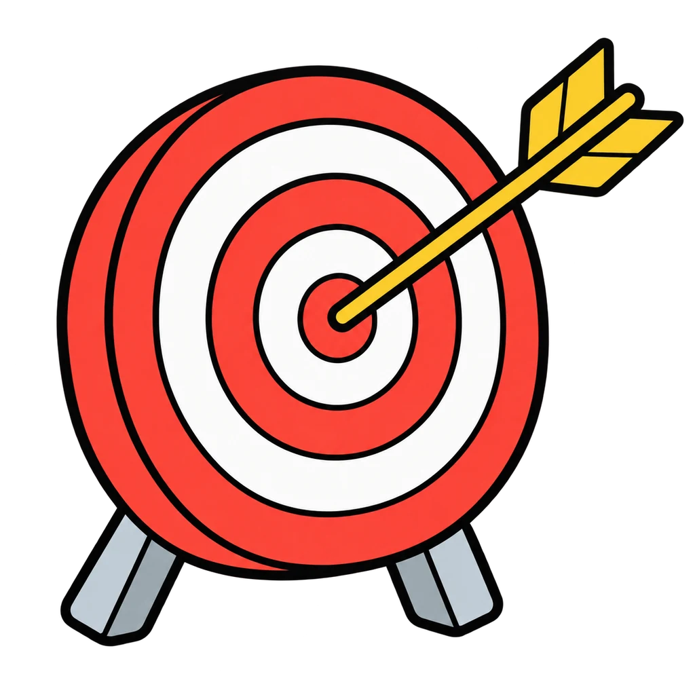
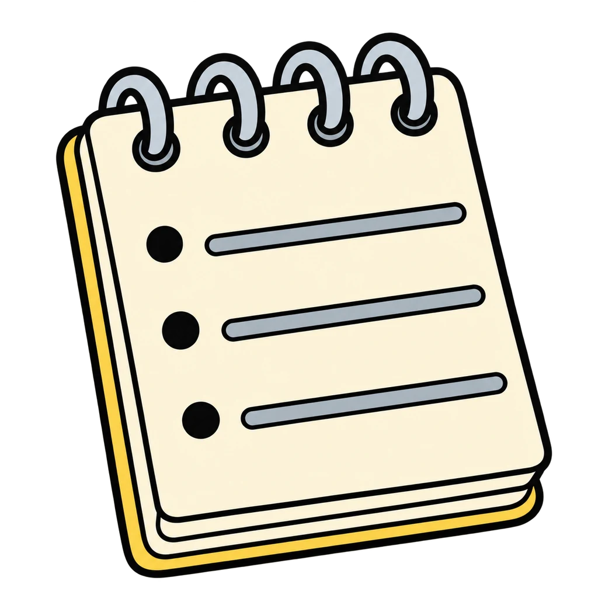
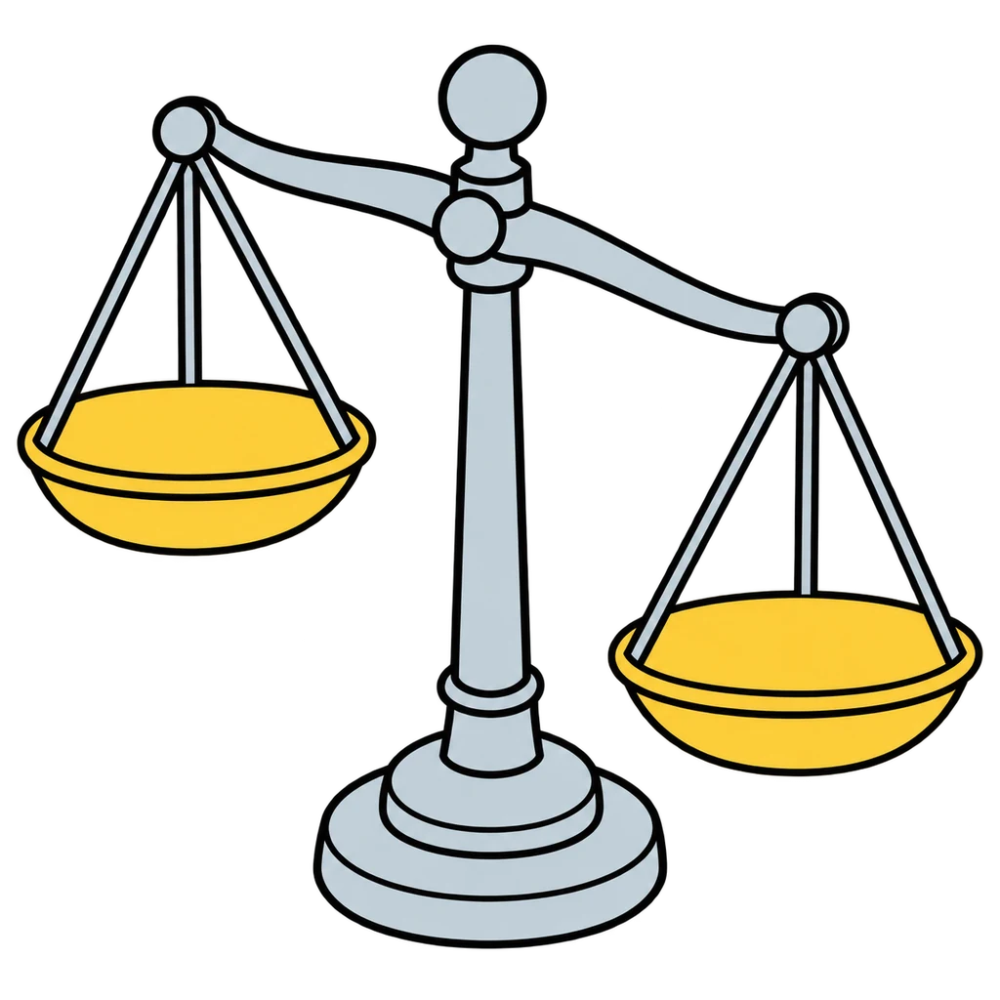
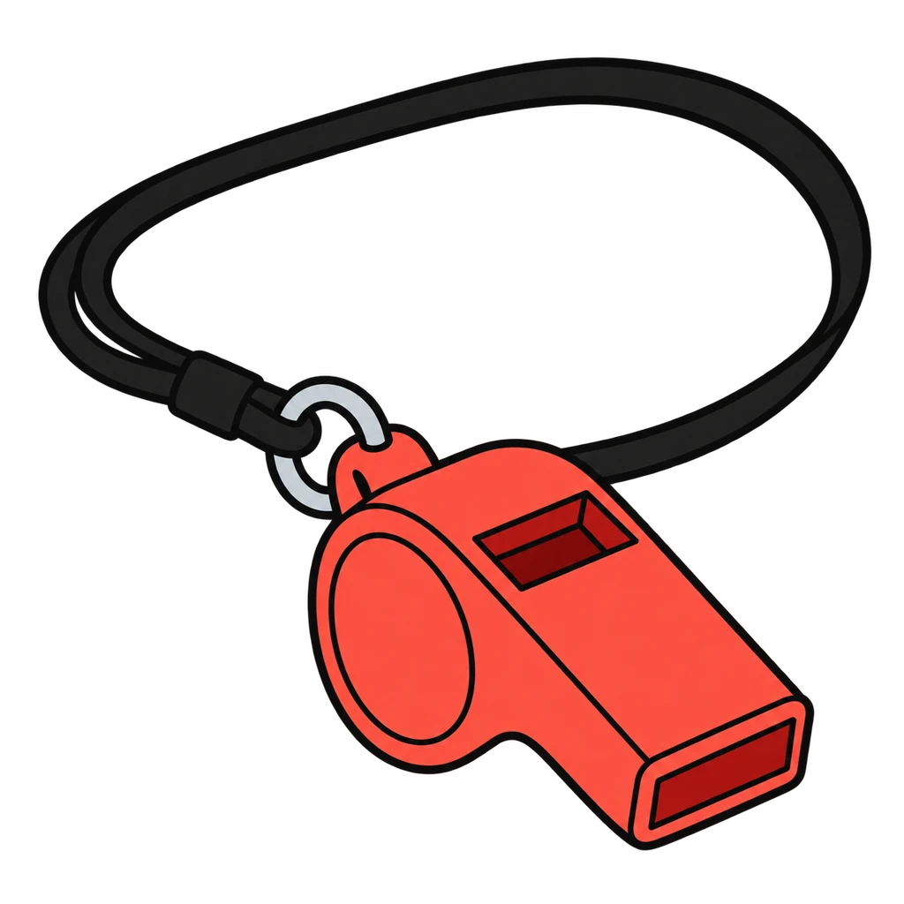
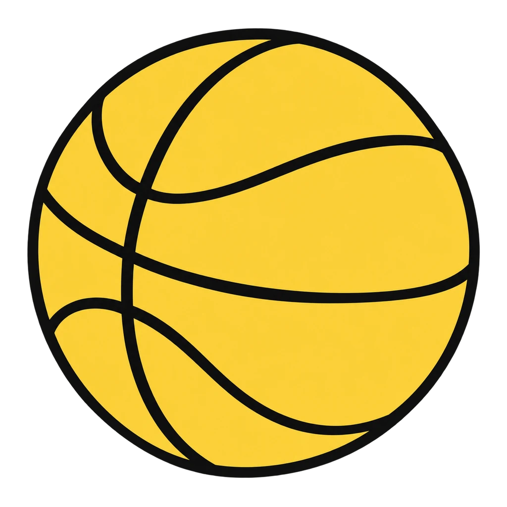
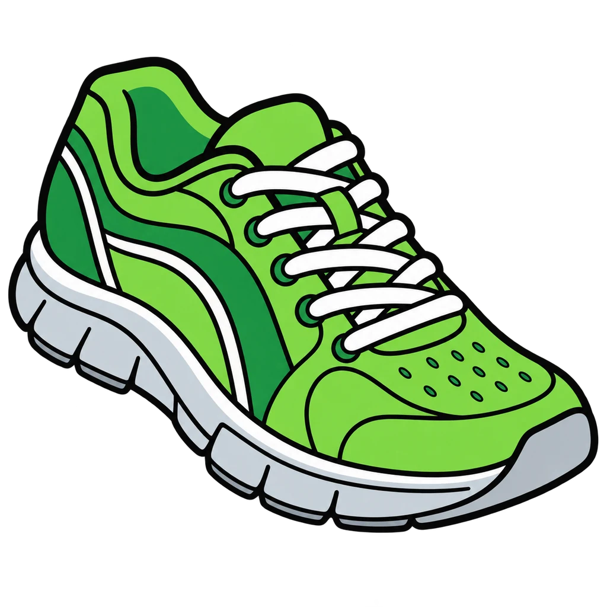
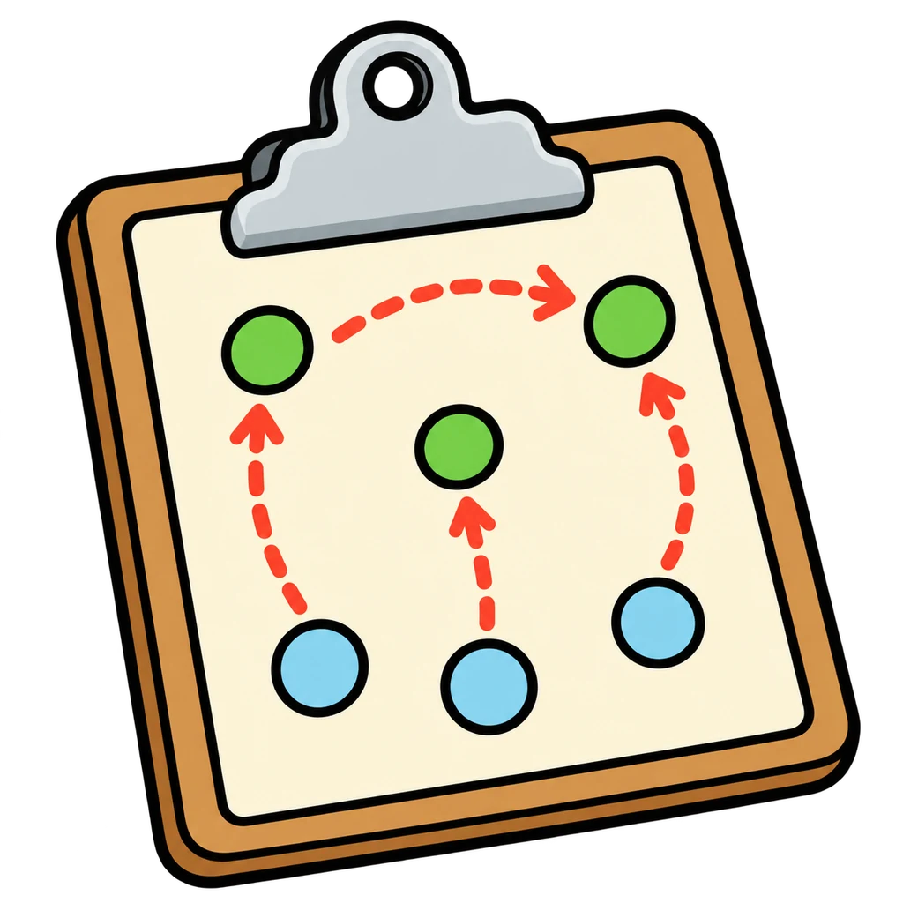

Reviews Lesson 2.4, Lesson 2.5. Reviews Lesson 2.4 (the SMART, stretch, vague sort; every goal in Round 1 is from Handout 02.04 or the lesson's own examples) and Lesson 2.5 (the five-step decision model and the model ladder from the teacher key). Use it as the Day 2 do now of Lesson 2.5, which already asks students to write the five steps from memory, or on the day the Goal Plans come back for the look-back four weeks later. grade 6 can play Round 1 with 12 goals and skip the ladder sequence; the decision-model sequence is the same wording as the Unit 0 poster, so it also works as a Unit 0 review any time in the year. Grade 6 can play Round 1 with 12 goals and skip the ladder sequence.

Goal Check
A goal appears. Tap it into SMART, Stretch, or Vague. Then tap the five steps of the decision model into order, and build the school-team ladder from this week at the bottom to the goal at the top.
How to play






Done
The ones to study:
Worth knowing by heart:
- Handout 02.04 Part 1: the five letters and the question to ask for each
- Part 2: sort the six (1 ST, 2 S, 3 V, 4 S, 5 ST, 6 V)
- Handout 02.05 page 1: the rung test, and page 2: the five-step decision model from Unit 0